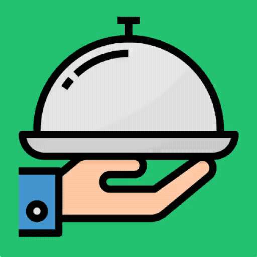

<ion-header >
  <ion-toolbar color='primary'>
    <ion-title style="text-align: center; font-family:Georgia, 'Times New Roman', Times, serif; " text-center>La Comanda</ion-title>
  </ion-toolbar>
</ion-header>

<ion-content class="fondo">
  <ion-toolbar>
    
    <ion-title style="font-family:Georgia, 'Times New Roman', Times, serif;">Iniciar Sesión</ion-title>
    <br>
    <form [formGroup]="form" >
      <ion-item style="border-radius: 2rem;" class="full-width-input">
        <ion-label position='floating'>Correo</ion-label>
        <ion-input  type="text" formControlName="mail"></ion-input>
      </ion-item>
      <br>
      <ion-item style="border-radius: 2rem;" class="full-width-input">
        <ion-label position='floating'>Contraseña</ion-label>
        <ion-input type="password" formControlName="clave"></ion-input>
      </ion-item>
      <br>
      <ion-button style="margin-bottom: 2rem;" [hidden]="ocultarVerificar"  color='secondary' *ngIf="logeando" [disabled]="!form.valid"  (click)="entrar()">Entrar</ion-button>
      <br>
      <ion-button style="margin-bottom: 2rem;" [hidden]="ocultarVerificar"  color='secondary' *ngIf="logeando"  (click)="entrarAnonimo()">Ingresar como anonimo</ion-button>
      <!-- <ion-button [hidden]="!ocultarVerificar" color="secondary" *ngIf="logeando"  (click)="Entrar()"><i class="fa fa-spinner fa-spin"></i> Ingresando</ion-button> -->
      <br>
      <span style="margin-top:2rem;">¿Todavía no sos usuario? <a (click)="registrar()">Registrate</a></span>

    </form>
  </ion-toolbar>


  <ion-fab id="f-boton-idioma" horizontal="end" vertical="bottom" slot="fixed">
    <ion-fab-button color="primary">
      <ion-icon name="add"></ion-icon>
    </ion-fab-button>
    <ion-fab-list side="top">
      <ion-fab-button color="secondary" (click)="autoLog('Mozo')">Moz</ion-fab-button>
      <ion-fab-button color="secondary" (click)="autoLog('Admin')">Dueño</ion-fab-button>
      <ion-fab-button color="secondary" (click)="autoLog('Bar')">Bar</ion-fab-button>
      <ion-fab-button color="secondary" (click)="autoLog('Cocinero')">Coci</ion-fab-button>
      <ion-fab-button color="secondary" (click)="autoLog('Cliente')">Clnt</ion-fab-button>
      <ion-fab-button color="secondary" (click)="autoLog('Mozo')">Metre</ion-fab-button>
    </ion-fab-list>
  </ion-fab>
</ion-content>
